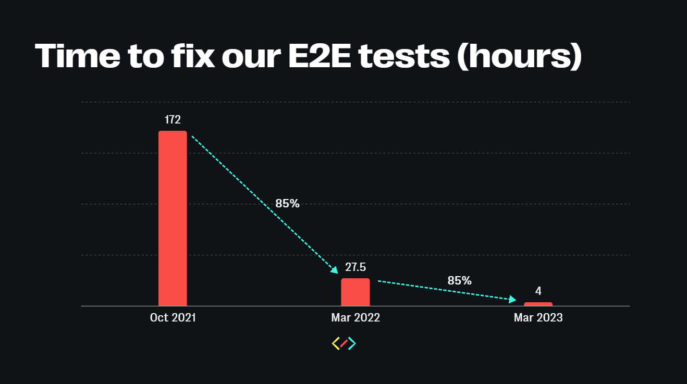
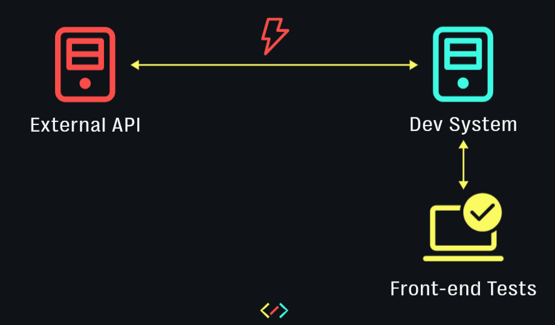
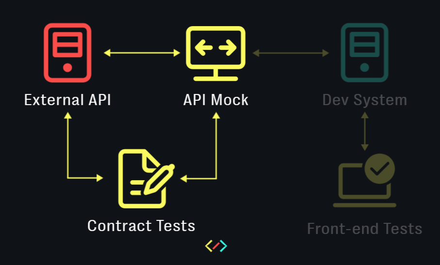

How do you tame an external API that constantly breaks your tests?
Oct 2023This article is the written version of the talk Vincent Hennig and I presented at the WeAreDevelopers conference on 28 July, 2023 in Berlin.
October 2021 was a month filled with agony for my software development team. We found ourselves in a crisis that led us to some soul-searching.
I work as part of a front-end focused team, which develops and hosts an E-commerce website for our client. I say 'front-end focused' because our backed is maintained by an external team, whose API our web application consumes. Shortly before October 2021, the backend team made a major change to this API, which sent our tests into a tizzy. 8 out of 10 of our end-to-end tests were red, and had to be painstakingly analysed, adapted and comforted. In most cases, the API didn't send the responses we expected. When it did, the response data weren't in the right format. Further, key test data were missing.
The whole process felt like putting together a complex jigsaw puzzle, but with pieces that kept changing shape. The moment we solved one section of the puzzle, another section would get scrambled. Every corrected test was a piece forced back into place, and the whole month was a slow, painstaking effort to rebuild a familiar picture from a chaotic mess of ill-fitting parts.
Out of morbid curiosity, we decided to measure how much pain this process caused us (in number of hours). The verdict took us all aback. It took us 172(!) hours to recover from a major update to the backend API. We then asked ourselves how many bugs or errors we had uncovered for the 172 hours we had invested. The answer was 1 bug. 1 measly dropdown that wasn't working as expected. The rest of the time was spent merely patching up wounds that had exposed our fragility to the external API. Something had to change.
Today, we have come a long way with solving this problem. In Mar 2023, it took us merely 4 hours to recover from another backend overhaul. This progress motivated my colleague Vincent and me to share our learning. We told our story at the WeAreDevelopers 2023 conference in Berlin to a packed audience (see video above). This article reiterates what we narrated there.
The root cause
Since we were primarily a front-end team, we had extensive tests against our front-end. However, we had neglected testing the back-end API we consumed, since an external team owned it. This was a big mistake. We then realized that it was also our responsibility to test the backend API with an equal amount of rigour. Further, we needed to improve coordination and collaboration with the external backend team. Finally, we needed to make our software and tests robust to changes in their API environment.
This is an old problem in software development, and it has an old solution that goes by the name of Consumer Driven Contract Testing. An API contract is an agreement between an API provider (the external backend team) and an API consumer (us), which documents this API's behaviour. Our solution to this problem involved a three step process:
- Validate contract
- Enforce contract
- Simulate contract
These steps are sequential, and represent different levels of maturity . E.g. to successfully move to step 3, simulate contract, you need to have validated and enforced it earlier.
Setup
For our demos, we used Fake Store API as the test API. For writing the tests, we used Karate DSL, a versatile and user-friendly test framework that uses Gerkin like syntax. You can see all the demos in the video linked to this article. The code presented in the demo can be found in this Github repository.
Validate contract
This step involves writing automated tests to ensure that the API is working as expected. We wrote these tests at three different levels of detail - status, schema and data.
Level 1. Validate status
We started off by writing tests that ensured if key endpoints were sending us the right response status. Since this was a red-green superficial check, we needed more.
Level 2. Validate schema
We then moved on to also validating the response schema for these endpoints. We merely asserted the availability of specific keys while keeping their values generic. We did this so that our tests would not break even if the specific data delivered by the endpoints changed.
In the first scenario, we insist on each item of the response array to deliver an id that is a number, a title that is a string and so on. However, in certain cases, we needed to be even more specific, which leads us to level 3.
Level3. Validate data
In this level of validation, we dealt with cases where our front-end tests depended on specific data being delivered by the endpoint. Here we insisted on this data being delivered in the format that our tests expected them.
In the first test scenario above, we insist on the 3rd product having the title 'Mens Cotton Jacket', and its price being 55.99.
All these levels are cumulative, and together, they make for a robust layer of tests against the external API.
A couple of best practices to note here:
- Expected API response schema are best stored in a separate JSON file, so that they don't clutter up your tests.
- Specific data that your tests expect can be stored in a separate test data configuration file, which is then referenced across your tests. This way, if this data changes, you only need to modify one file.
The rule of thumb here is to write contract API tests for every endpoint that our front-end tests depend upon. This really speeds up the analysis of broken tests - if a front-end test fails and its corresponding API test has also failed, chances are that these are related.
One thing you need to guard against is being too dogmatic. Remember that your objective is not to test the backend API in its entirity. It is to merely test that slice of the API that you depend upon. Merely test the endpoints that you consume. And merely test those key-value pairs in the schema that are relevant for your use. Only in exceptional cases will you need to test the values that accompany these keys.
Enforce contract
A contract is merely as good as its enforcement. For the longest time, we had defined our contract in the form of static documentation. Our external partner used a Swagger page to document the endpoint's behaviour. However, we knew with experience that this document grew outdated with time. It was a constant struggle to keep it in sync with the real API.
At our end, we also documented test data in static tables in a Confluence document. This document also required constant work and tended to decay with time. We needed a better alternative.
"Use your code as contract"
In step 1, validate contract, we had already written detailed tests to ensure if a contract is working properly. We now realized that these API tests serve as a better definition for the contract than static documentation. With the first two levels of validation, these tests can describe an API's behaviour as well as any API document can. As for test data, this data can be conveniently captured in a test data configuration file that feeds into your tests.
In effect, the API contract with your partner is fulfilled only if these tests are green. Our mantra - use your code as contract. That way, the contract's definition is dynamic and keeps pace with changes to the API it describes.
But when your tests do invariably fail, how can you troubleshoot them?
Troubleshooting woes
Our approach was to ping our partner team via a shared messaging app. We would describe the problem in the chat window and throw some additional info across for debugging. In most cases, this information would not be adequate and they would request some more. Sometimes, they give us a solution that we don't understand. This exchange goes back-and-forth for hours, and sometimes for days, without the underlying problem being resolved.
Our solution to this problem was to share our tests with our external partner and have them test on our behalf. Now you might be skeptical of why an external team would be enthusiastic to run your tests. This is what we thought as well, until we suggested this to our partners and were pleasantly surprised when they agreed right away.
This was when we realized that the pain we felt was also felt by our partner team. They weren't thrilled about being interrupted with debugging requests in the middle of important work. They also did not enjoy playing detective, to random clues we threw at them across a chat window. By sharing our API tests with our partners, we clearly communicated what we expected from their API. Further, we also gave them valuable information to debug and fix this problem.
However, despite robust contract validation and enforcement, our front-end code still has a tight dependency on the backend API. When the API changed, it still broke our tests. Getting around this limitation is what we do in the third step of our process.
Simulate contract
Disclosure - we are still working on this part of the problem.
With API mocking, you truly turn into the master of your domain. You are finally isolated from the entropy introduced by those erratic endpoints of your external partner. You can reset state changes as often as necessary and reuse the same test data. You can mock and test against endpoints that aren't available in the test environment due to security or other constraints.
What's more? With new features, you no longer have to wait on endpoints to be delivered by the external team. Instead, you can simulate the behaviour of endpoints that do not exist yet and start developing new features against them.
We started off by mocking our endpoints with Karate Netty, a feature offered by Karate, which served us well for simple endpoints.
You can run this example with the following command:
java -jar karate-1.4.0.jar -m src/test/java/Simulate/users.feature
-p 8081
However, mocking also comes with its own reality distortion field. With time, our mocked endpoints are sure to deviate from the real API, which can lead to catastrophic failures if ignored for long enough. Luckily, there is an easy solution to this problem. Those triple-layered contract tests can be run against both the mock endpoint and the real endpoint in quick succession. If both these test runs are green, your mock is in sync with the API. If one of these are red, a deviation has been detected. We demonstrate all of this in the video linked to this article (see above).
One caveat here - avoid overengineering your mocks. Your mocks merely need to simulate enough of the API's behaviour to verify your own application. If you are simulating an endpoint that delivers an access token, you can have it deliver the same token each time against a dummy username and password. You don't need the behaviour to be a replica of the external endpoint - that would be a waste of effort. Your mocks need to merely pass your contract tests - nothing more.
We soon realized that our use case was too complex to build with Karate Netty. We found Wiremock (standalone) to be the most promising alternative here, which we are currently building out. Although these tools are different, the same principles apply.
Summary
Building software often involves working closely with external teams and consuming their services. These services are often foundational to the application we are building. Therefore, it is a mistake to abdicate the testing of these services entirely to the external teams that build them. Even when external teams do test their software, they are unlikely to do this from your perspective. The onus is on your team and you to constantly verify the stability of the foundation that your software is built upon.
***Thanks to my colleauge Vincent Hennig for collaborating on this talk and this article. And thanks, of course, to my employer Bitgrip and my colleagues there for making all of this possible.